5.2 Dojo Drag And Drop
Dojo drag and drop provides a powerful mechanism to perform drag and drop. It
introduces the following concepts:
- A DND source is a widget which contains movable elements, which are
called DNDElement
- A DND target is a widget which will potentially accept dropped
DNDElement
- A DNDElement is a movable object, within a DND source
- A DNDBehavior process drag and drop events for a given list of
source-target couples.
